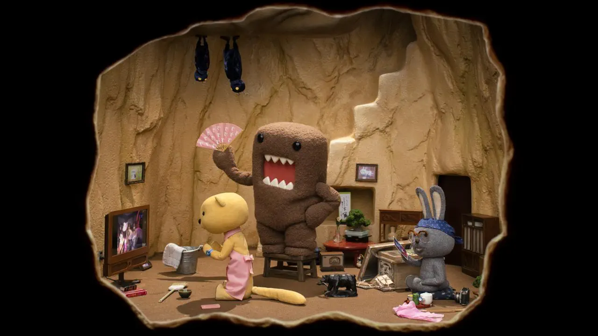
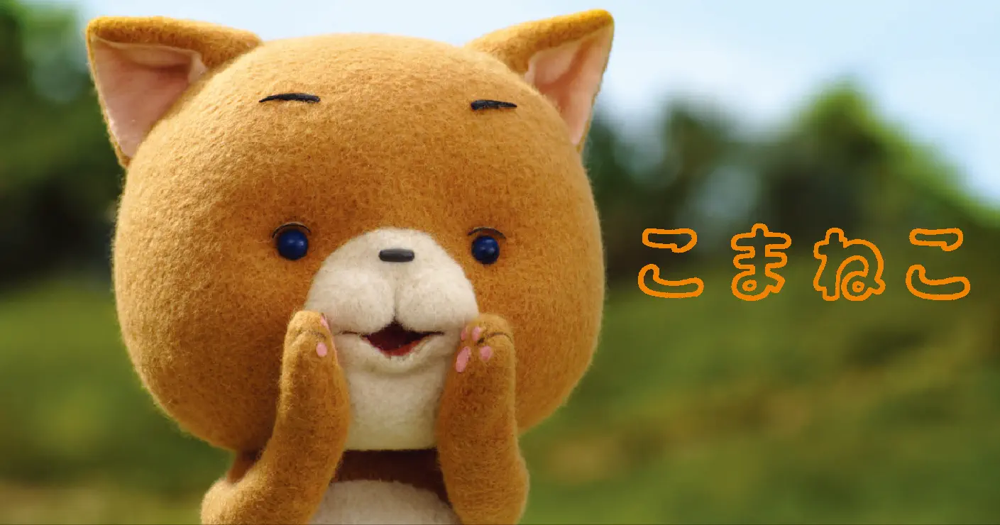

Vol.03 / Special Deep Analysis
ドワーフ・スタジオ徹底解析：
素材の記憶と職人技が織りなす「実存」の記録
2025.12.11 UP
📜 経歴：どーもくんから世界へ
ドワーフの原点は、1998年に合田経郎氏がNHKの10周年記念キャラクターとして「どーもくん」を誕生させたことにあります。その強烈な存在感と「動くぬいぐるみ」としての魅力は瞬く間に社会現象となり、2003年に専門スタジオとして独立。 小さなステーションIDから始まった歩みは、やがてフランス・カンヌをはじめとする世界の主要な映画祭で絶賛される、日本最高峰のストップモーションスタジオへと至りました。
◎ 作品の評価：デジタル時代における「実体」の勝利
デジタル技術が極まった現代だからこそ、ドワーフの人形、クレイ、コットンといったアナログ素材が放つ「手触り」や「素朴な質感」が特別な価値を持ちます。CGでは不可能な、物質がその場所に存在する「実在感」こそが、世界中の視聴者の心を捉えて離さない最大の理由です。
◎ 作者：巨匠の系譜を継ぐ「魂のアニメーター」
創設者・合田経郎氏のビジョンを具現化するのは、峰岸裕和氏らトップアニメーター。峰岸氏は日本の人形アニメーションの巨匠、川本喜八郎氏や岡本忠成氏から直接指導を受けた技術を継承しています。ドワーフ作品に宿る「静謐な品格」は、この伝統的な職人技術の発展によって支えられています。
◎ 技術：素材の限界に挑むコマ撮りの極致
一貫してアナログ素材（粘土、布、綿）にこだわる姿勢は、技術的には「極めて難解な道」の選択です。精緻なアーマチュア（金属骨格）を数ミリ単位で調整し、人形に命を吹き込む作業は、1日に数秒しか撮れないこともある孤独で過酷な職人芸です。
◎ 今後の予定：進化するアナログの地平
Netflix等のグローバルプラットフォームとの提携により、日本発のストップモーションは新たな段階へ。伝統の職人芸と最新のライティング、VFX技術を融合させ、アナログの「癒やし」と「迫力」を世界へ届け続けています。
📺 どーもくん (1998年)

NHKの公式マスコット。テレビ鑑賞を愛する純粋な心を持った、四角い茶色の不思議な生き物です。
【マニアック解説】 どーもくんの「毛並み」は、撮影時のライティングによってその表情を劇的に変えます。峰岸氏の技術によって、無表情なはずの「静」の造形が、瞬きや呼吸を感じさせる「動」へと昇華される瞬間は、ストップモーションの奇跡そのものです。
🐱 こまねこ (2004年)

好奇心旺盛で、8ミリカメラでの映画作りが大好きな女の子。粘土と毛糸による愛らしい造形と、繊細な動きが特徴です。
【マニアック解説】 布素材は光を拡散・吸収し、デジタルには出せない「柔らかさのノイズ」を生みます。峰岸氏による操演は、尻尾のひと振りにまでキャラクターの感情を乗せており、単なる動作の再現を超えた、パペットへの「憑依」の技術が光ります。
🐻 ぼくはくま (2006年)

宇多田ヒカル氏の楽曲MVに登場するフェルト素材のクマ。素材の「揺らぎ」をあえて抑え込まず、キャラクターが発するオーラのような効果として昇華させています。
🐛 ニャッキ！ (1995年〜)

体長2cmの視点から見た日常の冒険。粘土（クレイ）特有の「伸び」と「縮み」を活かした液状的な動きは、実写の背景と合わさることで五感を刺激する質感を生んでいます。
🐰 うさぎのモフィ (2012年)

世界初、綿（コットン）素材を本格活用した独自技法。モフィのふわふわした質感は、シャイで優しい性格そのものを体現しています。
【マニアック解説】 「綿を動かす」ことは静電気や風との戦いでもあります。一コマごとに繊維の束を整え、光を美しく反射させる極限の作業。モフィの耳が動く瞬間に見える微細な崩れと復元は、デジタルでは再現不能な「生命の瞬き」です。
🔍 Animeda! 視点：素材は「魂の器」である
ドワーフの歩みは、伝統技術が現代のキャラクタービジネスへと転生した歴史です。川本喜八郎氏が人形に込めた「静謐な命」は、どーもくんの「温かい沈黙」へと繋がっています。素材選びから始まる私たちのプロジェクトも、この「一コマ一コマに魂を込める精神」を継承していきたいです。